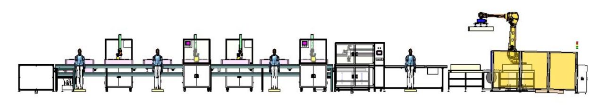

模块化设计在非标自动化设备行业的应用和发展
一、什么是非标设备
非标设备是指未按照统一的国家标准、通用规格制作，而是根据实际需求进行定制设计和制造的设备，它具有专机专用、小批量、多功能、多种类、复杂性高等特点。
哪里有机器换人的需求，哪里就有非标自动化设备，它涉及的行业非常广泛，几乎涵盖了所有工业和生产领域，具备千亿级市场空间，其主要参与者为专业的非标自动化设备厂商和大型制造业企业下设的自动化部门。

二、非标设备的行业痛点
在激烈的市场竞争下，客户对非标自动化生产线的要求主要为：①建设周期短、投资少、风险低；②订单切换的时间短；③能快速、低成本地进行生产线迭代升级，兼容新产品的制造；④标准件和定制件的种类较少，备件管理的难度低，不苛求使用者和维护人员的高技能水平。为了解决自动化生产线非标定制设计条件与客户实际需求之间的矛盾，实现缩短项目周期、降低设计成本、提高设计质量、满足客户需求的目标，需要找出一种能进行非标自动化生产线快速设计与高质量管理的有效方法。
非标自动化生产线的一种典型结构
三、模块化能解决哪些问题
模块化的概念在20世纪50年代由欧美一些国家正式提出，随后得到越来越广泛的关注和研究。在自动化设备领域，模块化是指将设备分成多个具有特定功能的模块，这些模块可以独立运行，也可以与其他模块进行联动，每个模块具有独立的功能和接口，方便组合和替换，提高设备的灵活性和可扩展性。目前，模块化设计方法已在机械、电子、船舶、建筑等多个行业得到应用。部分设备制造商，已将模块化思维运用到设备生产中，通过对常用模块的预组装，来提高设备整体制造速度。模块化具有以下优势：
（1）缩短了设计和制造周期。当用户提出要求后，只需更换某项模块或直接调用现有模块，即可满足新的设计要求，这样就大大缩短了设计和制造周期。
新产品=通用模块（不变部分）+改型模块（可变部分）+新功能模块（专用部分）
（2）提高设备柔性。通过功能模块的快速更换，可以提高设备柔性，以应对小批量、快交付的设备使用需求。
（3）降低制造难度。模组化后，设备BOM的数量和规格减少，使得供应链及生产制造环节管理难度大大降低。
（4）降低成本。模块化后，同一功能模块可用于数种产品，可以通过规模化生产实现降本效果。
（5）维修方便。产品维修时，只需更换损坏的模块，维修方便、快捷。
（6）性能稳定可靠。模块化设计使得产品结构定义相对固定，使得制造商可以进行精心研究，使产品稳定性逐渐提升。
四、模块化的行业实践
目前，也已有部分厂商开始了模块化供货尝试，模块化供货要求零部件生产企业具备多品类布局的产业基础，同时具备整合供应链的能力。
怡合达已在官网推出了自己的模块化产品，按功能依次分为抓取组件、输送组件、上料组件、其他功能组件、电控集成柜等。
嘉立创也推出了自己的模组化产品，包括顶升旋转机、顶升横移机、升降机、强制转机、输送机等。
天一智能成立于2013年，主要从事精密标准件及功能模组的研发、生产、销售和服务、工装载治具及自动化设备(线)生产制造。公司长期服务行业头部客户，基于多年的沉淀，已完成多品类、贴近客户的产业布局，依托与产业链的紧密合作，可以为客户提供模块化的产品和服务，帮助客户提高效率，降低成本。